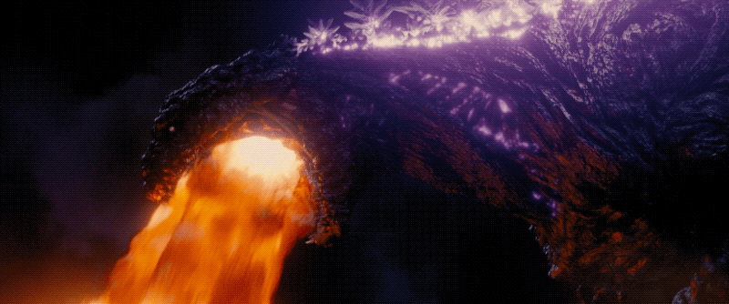

La era Reiwa (令和? ) es un término que se utiliza para identificar la serie de películas japonesas de la franquicia Godzilla lanzadas a partir de 2016 , al mismo tiempo que la serie de películas MonsterVerse de Legendary Pictures .
| Era Reiwa |  |
La era Reiwa (令和? ) es un término que se utiliza para identificar la serie de películas japonesas de la franquicia Godzilla lanzadas a partir de 2016 , al mismo tiempo que la serie de películas MonsterVerse de Legendary Pictures .